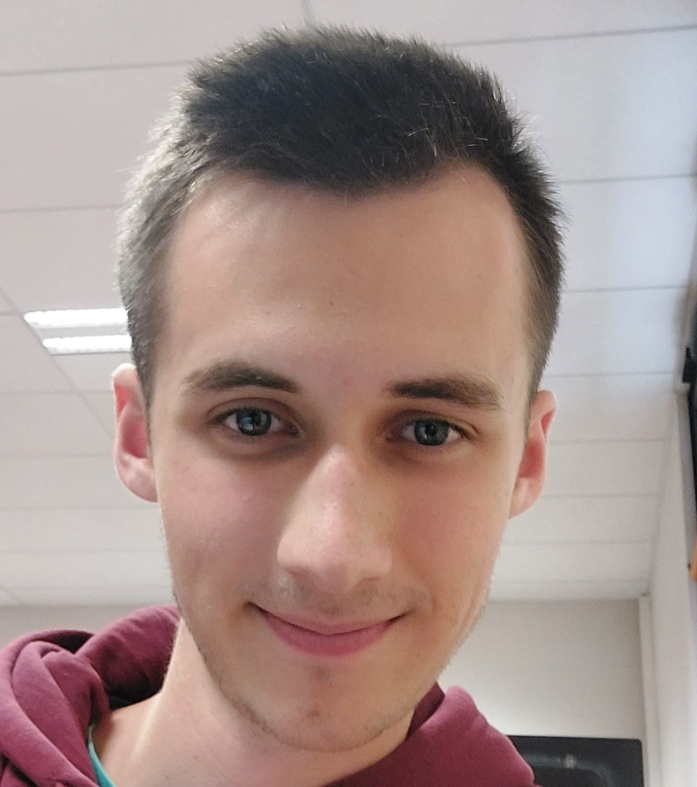

- Nom: BRODIN
- Prénom: Mathias
- Adresse postale: 1rue du Muguet Turckheim 68230
- Adresse mail: math.brodin.mtb@gmail.com
Curriculum Vitae


Objectif professionnel:
Je suis Mathias BRODIN étudiant en BUT réseau et télécommunication à l'IUT de Colmar.
Je souhaite travailler dans le milieu de l'informatique.
Trois domaines m'intéressent particulièrement:
- -La cybersécurité.
- -La programmation.
- -Le développement Web.
Mes années de lycée
Mes diplômes
Mon expérience professionnel
Mes compétences
Compétences RT:
- J'ai des facilités dans des domaine comme les mathématiques, la programmation et le développement web.
- J'ai occupé le poste de chef de projet lors de la SAE en groupe découvrir un dispositif de transmission.
- J'ai dû dirigé mon équipe et m'occuper du rapport de cette SAE.
Compétences techniques autre que RT:
- Je sais communiquer en anglais.
- Je connais les gestes de premiers secours.
- J'ai des compétences physique notamment dans les sports de combats car j'en pratique depuis plus de 10ans et d'endurance (Je me suis qualifié à pleins de cross quand j'étais au collège et au lycée, dont un régional sans faire de course à pied en club).
- J'ai fait un baccalauréat général scientifique (spécialité Mathématiques, physique/chimie et science de la vie et de la terre), ce qui m'a permis d'acquérir beaucoup de connaissances dans diverses domaines comme la mécanique, l'optique, la génétique, la chimie, la géologie, la thermodynamique etc...

Compétences humaines:
- Je suis perséverant, je n'abandonne jamais. Quand quelque chose me tient à coeur, je m'investit beaucoup.
- Je suis perfectionniste, je n'aime pas bâcler mon travail et je suis très ponctuel (j'arrive très souvent avance). Et j'organise toujours tout de la manière qui me parait la plus claire.
- Je suis quelqu'un de très calme, rares sont ceux qui m'ont vu m'énerver (on me dit souvent que je tolère trop de chose). J'essaye de rester toujours positif quelque soit la situation.
- Dès que j'en ai les occasion j'apporte mon aide à ceux qui en ont besoin.
Informations diverses
- Les langues étrangères:
- L'anglais où les professeurs de lycée m'ont estimé un niveau équivalent B2.
- L'allemand où les professeurs de lycée m'ont estimé également un niveau B2.
- Le japonais que j'apprends depuis deux ans sur l'application duolingo, je connais maintenant les deux alphabets phonétiques japonais (hiragana et katakana). J'arrive donc à lire et comprendre beaucoup de phrases, j'essaye parfois d'écouter des conversations en japonais et je comprends de plus en plus de choses.
- Compétences sportives: J'adore le sport j'en fais depuis mon plus jeune âge, j'ai d'abord commencé par la natation pendant deux ans et le ski également pendant deux ans avant de me diriger vers les arts martiaux que je pratique depuis 10 ans. Au début j'ai fais deux ans de Judo mais ça ne convenait pas trop à ma morphologie étant plutôt léger alors je me suis mis au karaté il y a 8ans où j'ai pu m'exprimer par ma rapidité et ma technique. Et deux ans plu tard j'ai commencé le kobudo en parallèle (pratique du karate avec les armes des paysans d'okinawa comme le bo, le sai, le tonfa, le nunchaku etc...). Voulant prendre du poids je me suis également lancé dans la musculation au poids du corps il y a 5ans mais au final cela m'a surtout fait gagner en force, en explosivité et en endurance, donc j'ai adapté cette pratique comme une sorte de préparation physique. Par semaine j'essaye de garder un rythme de 2 entrainement de Karate, 1 entrainement de kobudo et 2-3 entrainement de musculation.
- Mes Hobbies: Dans mon temps libre, soit je fais des activités avec mes amis, soit je fais du sport ou alors je joues aux jeux vidéo plutôt de style monde ouvert assez détente.